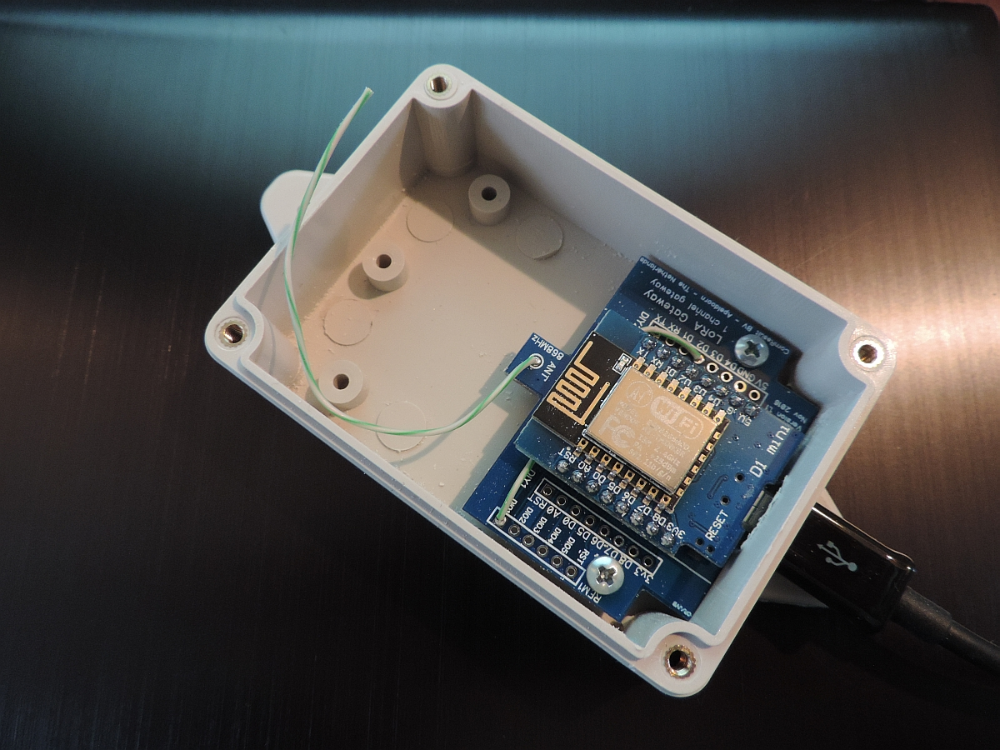

{kind=link}

Version: 4.0.1
date: January 25, 2017
(c) Maarten Westenberg (mw12554@hotmail.com)
|  |
Single Channel Gateway based on traditional PCB |
This is the version 4.0 (and newer) version of the ESP8266 LoRa Gateway. The LoRa gateway based on the ESP8266 mcu has evolved a lot over the last year. Although all versions that I built are/were built using the Wemos D1-mini board that can be bought on Aliexpress amongst others, the system has changed. For the latest version of the gateway I make use of the PCB that has been designed and built by Charles Hallard (and can be bought from pcbs.io). If you use the Hallard PCB, you have to remember though that DIO0, DIO1 and DIO2 pins are multiplexed on the board using (very!) small diodes to GPIO pin 15 (D8).
Other PCB's work as well, but if you like to build a small gateway and keep as many GPIO pins available as well, the Hallard board is unbeatable. An alternative solution is the board made by Comresult. This PCB is larger than that of Hallard but can be put inside a standard IP56 box. Should you work with a more traditional PCB, make sure that at least DIO0 and DIO1 are connected to a pin on the Wemos. Such a board is shown above.
Pins used MUST(!) be documented in the ESP-sc-gway.h file for the gateway to work.
The project source code is found on the Things4U github page.
A full-function gateway is capable of simultaneously receive several LoRa packets with various spreading factors on random channels. The 1-channel gateway does not have the performance to do all that. It is sort of compatible with the LoRa data format sent by sensors but it does not implement the "support at least 3 frequencies" part of the LoRa specs and therefore is not compliant.
The 1-channel gateway has the following limitations compared to its bigger brother:
As you can see on the picture above, the whole thing fits on a very small board. And as there are even less connections necessary as for the loRa node, this DIY project could be ready in a matter of hours. These are the steps:
I did not yet find a nice box to put the gateway in, but that will probably not last very long.
The pin out of the two devices on the gateway board are as follows:

The pin-out of the ESP8266 is as follows (note: There are differences in pin-out between the various ESP8266 devices)

The ComResult PCB is a next version of the Bare Board solution and uses the same pin definitions. Please make sure that you connect dio1 to D2 on the board with a wire (and connect dio2 to D3/GPIO0 in order to use the gateway as a node later).

You see a picture above of one of the latest versions of the ComResult board. Please not the 2 wires that connect the D2 pin of the ESP8266 with the dio1 pin of the RFM95 and optionally the D3 pint with the dio2 pin.
For the bare board solutions the connections that need to be made are as follows:
| RFM95 pin | ESP8266 pin | |
|---|---|---|
| 3.3V | VCC | 3.3V |
| GND | GND | |
| MISO | D6 GPIO12/MISO | |
| MOSI | D7 GPIO13/MOSI | |
| SCK | D5 GPIO14/CLK (*) | |
| NSS | D8 GPIO15/CS | |
| RESET | *nc | |
| DIO0 | D1, GPIO5 | |
| DIO1 | D2, GPIO4 | |
| DIO2 | D3, GPIO0 (**) |
* The reset pin does not have to be connected so it seems. It is only used at setup to read the chip identification
** This connection is not necessary for the current version of the gateway, but is more versatile for next versions or other use
As you can see, both reset and GPIO0 of the ESP8266 are not used. Not connecting the last one makes the ESP8266 gateway more stable and the behavior between flash and normal mode is the same.
Carles Hallard has designed a very small board that can be used to build your own gateway. The boards are available from pcbs.io abs will be shipped for free anywhere in the world in quantities of 5 pieces.

On the top left you can see the place where to solder the 3 diodes which connect dio0, dio1 and dio2 to GPIO15.
The Hallard board is slightly different from the bare-board or ComResult pcb as it will share dio0, dio1 and dio2 with the same GPIO pin over 3 diodes. This requires small adaptations of the LMIC software should you want to use thisPCB to build a node, and it does require some additional work at the gateway if you like to work with the latest version of the gateway.

For the bare board solutions the connections that need to be made are as follows:
| RFM95 pin | ESP8266 pin | |
|---|---|---|
| 3.3V | VCC | 3.3V |
| GND | GND | |
| MISO | D6 GPIO12/MISO | |
| MOSI | D7 GPIO13/MOSI | |
| SCK | D5 GPIO14/CLK (*) | |
| NSS | D8 GPIO16/CS | |
| RESET | *nc | |
| DIO0 | D1, GPIO15 (**) | |
| DIO1 | D2, GPIO15 (**) | |
| DIO2 | D3, GPIO15 (**) |
* The reset pin does not have to be connected so it seems. It is only used at setup to read the chip identification
** Soldering small diodes at the position shown above is quite difficult! And moreover, once you have soldered the ESP8266 to this board you cannot reach the diode position ever again. So (!) make sure you solder all 3 diodes (but at least 2) before continuing with this board.
As you can see, both reset and GPIO0 of the ESP8266 are not used. Not connecting the last one makes the ESP8266 gateway more stable and the behavior between flash and normal mode is the same.

The software is currently still under development. Several additions have been made to the RaspberryPI version in order to make this ESP version more reliable and workable. However, there are still some functions that can be included such as setting the SSID and password dynamically (The ESP will act as an access point so that your PC can connect to it, and set SSID and Password).
Please find the software on github
The ESP libraries support DNS hostnames out of the box. As apparently DNS functions are hard on the mcu, and may cause crashes and watchdog resets, I have decided to only once get the IP address of the LoRa router and from that moment on use that IP address in the program.
The clock function is implemented using NTP. As soon as we have an IP connection we try to connect to a timeserver to get the current time. This way we know how long the unit is operational since we last powered it on, and can we time things if necessary.
As the ESP8266 is not a Linux machine, so it has no local disk storage, at least not out of the box. It also lacks the possibility to make a SSH connection as you can with a RaspberryPI for example. Still we would like to know how the device is doing, and how long it is operating without any problems. The latter is easy to measure if we look at the time that the gateway is operational. If that time is after the moment we plugged the gateway in, it probably suffered from a Watchdog reset and has restarted since.
The following links contain useful information for this project.
I think we all ask the same questions:
There are some things to remember however: